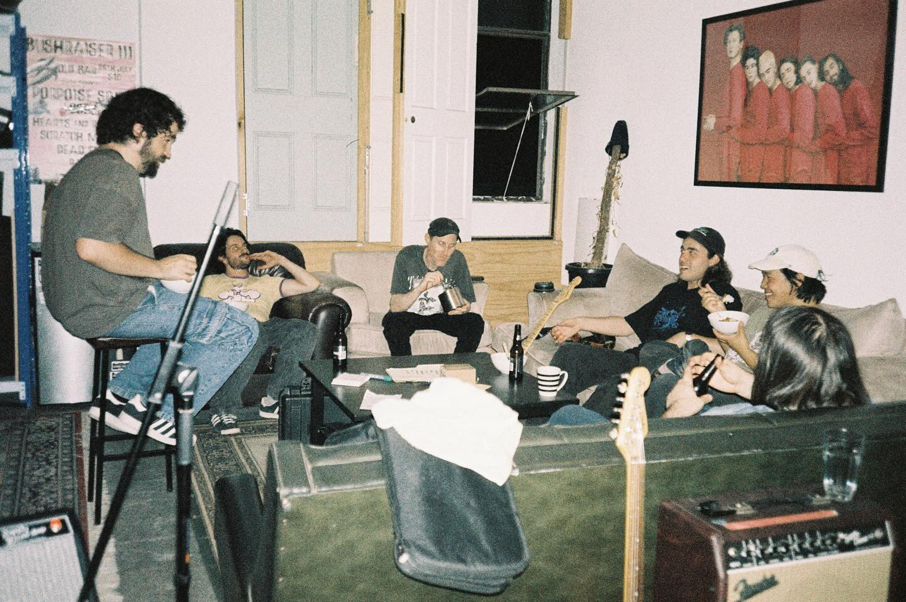
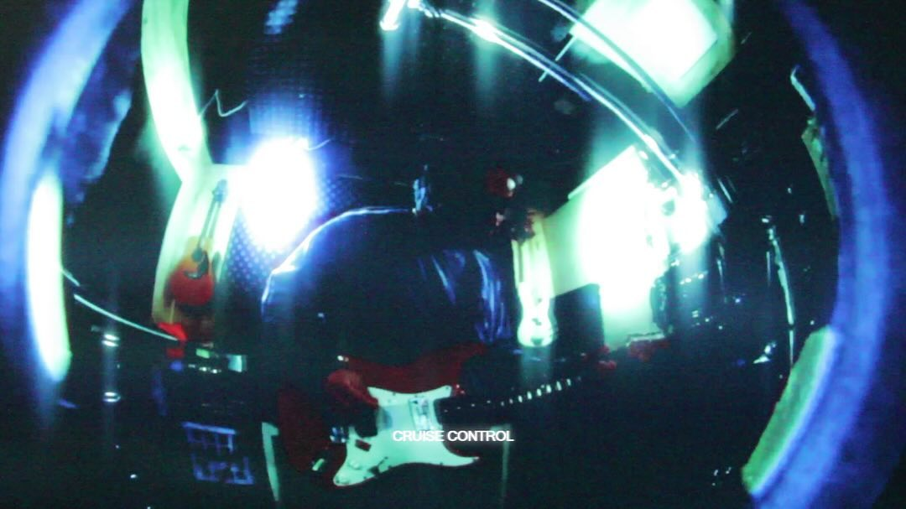

David Quested moved to the United States for learning drumme and
becoming a professional jazz drummer.
He studied at 'Victorian College of the Arts' and 'UCLA' in Los Angles.
After his valuable experience in America, he decided to return to his home country,
Australia and devote himself to his rock music career.
He also peforme with the indie-rock band Garage Sale as their new drummer.
His passionate pursuit of knowladge has had a major impact
on his musical endeavors. Not only is he a professional drummer,
he also writes the lyrics, compose the music and
even creates music video himself, working in collaboration
with the local community.
His nostalgic music is sure to resonate
with many people in the world.
